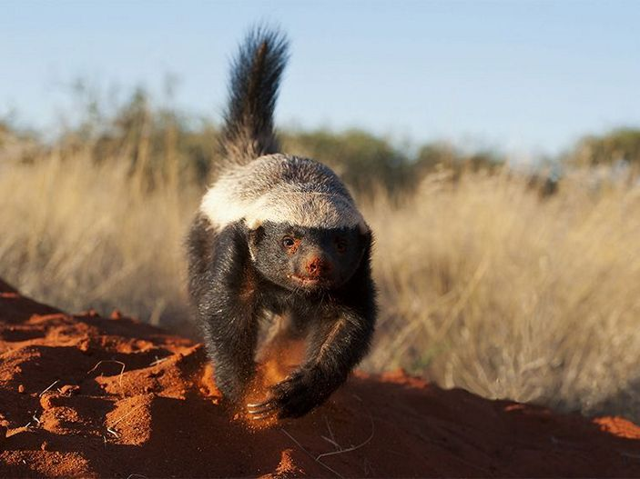

Африка — место обитания крупных агрессивных хищников, но есть там животное, превосходящее их своей свирепостью и бесстрашием. Выносливый, беспощадный и прожорливый, он готов напасть на самых опасных африканских змей и не боится даже леопарда. Это медоед (Mellivora capensis). Медоед — довольно крупный представитель семейства куньих: его вес колеблется в пределах 9–13 кг, а длина тела — 95–105 см, включая 25-сантиметровый черный хвост. Медоед похож на росомаху или барсука: у него такое же вытянутое туловище и такие же непропорционально короткие ноги. Но он настолько необычен, что относится к отдельному подсемейству и роду.
В Африке, где медоеды встречаются практически повсеместно (кроме пустыни Сахары), их называют «лысыми барсуками». Но они совсем не лысые — так лишь может показаться из-за светлой верхней части головы, боков и спины. Такой окрас позволяет им маскироваться среди пустынных солончаков. А вот живот, лапы и хвост медоеда покрыты блестящей черной шерстью. Встречается медоед и в Азии: на Аравийском полуострове, в Индии и Непале, а также в Средней Азии.